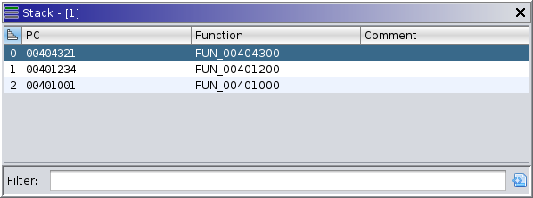

|  |
The stack window displays the current trace's execution stack, as unwound and reported by the target. Not all debuggers will unwind the stack, in which case, this window displays only the innermost frame. When emulation is used to generate the current machine state, only a single synthetic frame is shown. Level 0 always refers to the innermost frame, and each incremental level refers to the next caller in the chain — most of the time. The current frame comprises one element of the tool's current "coordinates." Selecting a frame changes those coordinates, potentially causing other windows to display different information. Namely, the Registers window will show registers for the current frame, assuming they can be retrieved. The Listings may also navigate to the current frame's program counter.
The stack table has the following columns: